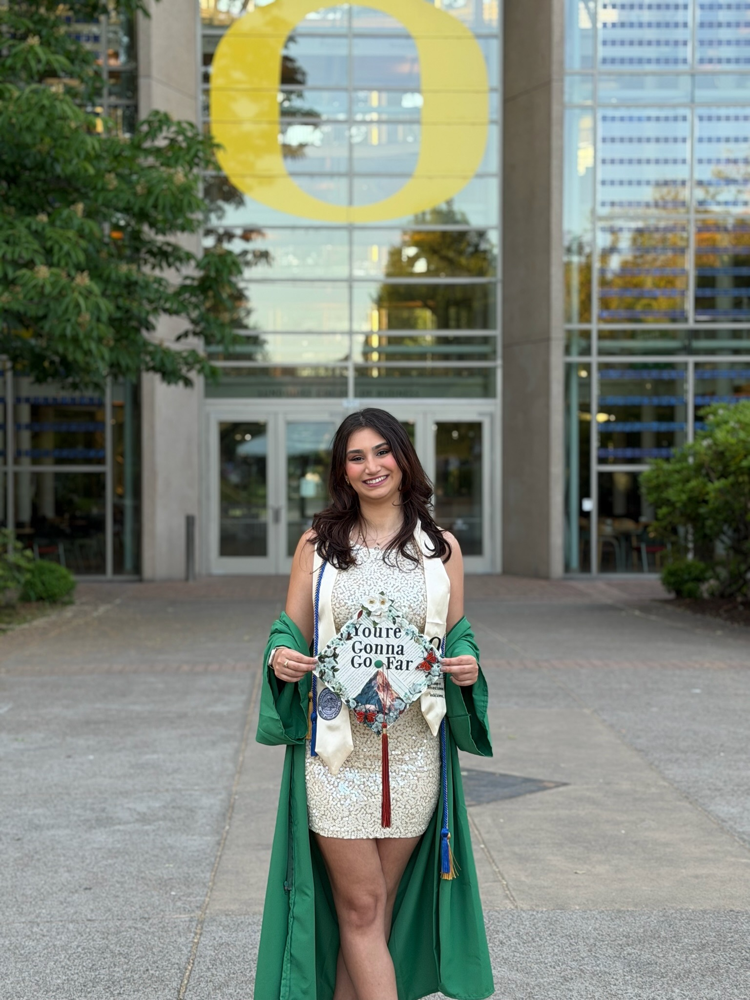

I am a 22-year-old recent graduate witha passion for Economics. It really fascinates me how the economy works and how it affects our daily lives. I am eager to apply my knowledge and skills in a professional setting and contribute to the field of economics.
April 2025 - June 2025
April 2025 - June 2025
This project involves analyzing text data using the SpaCy library. My professor provide the novel Pride and Prejudice and I used SpaCy to find the most relevant words.
This project also involves analyzing text data using the SpaCy library. I had to find the most relevant words from the text of my own choosing and determine if the words reflected the text. I chose Frankenstien.
This project involves exploring and visualizing data using various tools and techniques. I used data of my own choosing to determine if the data is relevant to the economy.